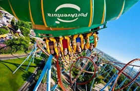
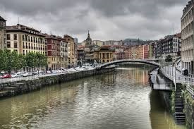
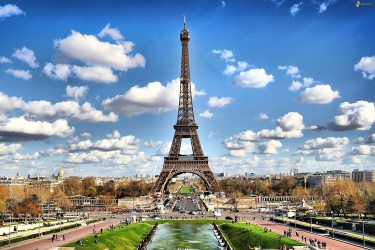
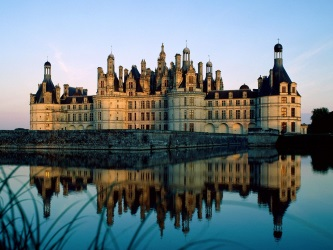
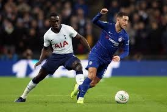

Travel
I have always loved travelling since I was young lad.
My family and I go on holiday most summers.
We usually go to France or Spain, but we have gone to England the past couple of years.
Spain
- My first memory of going on holidays was to Barcelona, Spain when I was 5 years old with my family.
- We mostly stayed in Barcelona and Salou when we went to Spain, but one year, we went to the Basque country.
- I have seen a couple of soccer games whilst there, primarily Espanyol FC games (as Barcelona FC games are very expensive).
- Another attraction in Barcelona/Salou is the Portaventura entertainment park, which we visited every time we went to the area.
- The Basque country was also very interesting to visit, as it very different culturally from the rest of Spain, much like Catalonia, where Barcelona is located.
- I managed to get to an Athletic Bilbao match while there, which was very entertaining.


France
- France was where my family and I went on holidays the most.
- We have been all around France, staying in a variety of caravan parks and camping sites.
- I enjoyed these places the most, as I was given a lot of freedom of where I could go, that I didn't have at home.
- We also visited Paris, and Disneyland, a couple of times.
- I enjoyed visiting French historical sites and museums immensely, especially Medieval sites, due to my interest in history.


England
- In the last few years, my family and I have started going to England for our holidays.
- We usually go for city breaks, in cities such as Liverpool, Manchester and London.
- We have also visited theme parks while in England, such as Alton Towers, near Stoke.
- My brother and I also go to Premier League soccer games every year.
- Since we support Spurs and Chelsea respectively, we try to get tickets for this match, though since it is a derby game, this isn't always possible.
